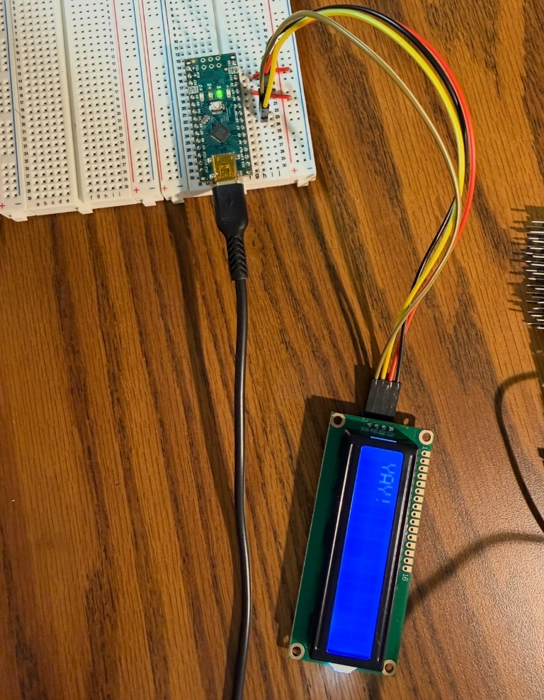
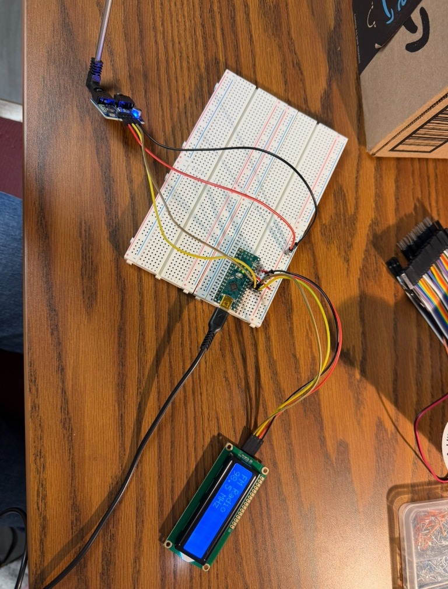

Project Overview
**unfinished**Arduino FM Radio
Fall 2026 - ECE 1100 - Discovery Project
Arduino, C/C++
Based on a tutorial by educ8s.tv
Using an Arduino Nano, I built an FM radio receiver that tunes between 87 and 107 MHz and displays the frequency on an LCD. I chose this project to improve my programming skills and learn about how radio signals are processed.
The Problem
Radios are everywhere, but I did not understand how a signal gets from a device to a radio. For my ECE 1100 Discovery Project, I wanted to learn about this topic. My overall goal was to use an Arduino Nano to build an FM radio receiver that could tune to a station and play it through a speaker. I chose this project because I desired to strengthen my programming skills in C/C++ and learn how radio signals are received and processed, as well as to explore my interest in radar and sensing.
The Process
The design uses an Arduino Nano as the controller and a TEA5767 FM radio module as the receiver. The Arduino Nano communicates with the module over the I2C interface, and a potentiometer sets the frequency. The Arduino reads the frequency’s analog value from this potentiometer, then maps it to a frequency that is between 87 and 107 MHz. A second potentiometer controls the volume. I wired the parts together on a breadboard, and I coded what was needed for the Nano to communicate properly.
The module’s audio signal is very weak, so I sent the signal through an LM386 amplifier module to a small speaker. To see the tuned frequency, I used a Nokia 5110 LCD. I ran into some problems due to the materials I had. I needed to strip wire for multiple connections, including the speaker, so the volume of the noise that came out of the speaker was very faint. In the future, I could get a different speaker that would connect better.
The Outcome
In the end, the radio would receive the stations and my code worked, but the audio quality was very poor due to my limited supplies. The tutorial I followed states that the radio module’s own output was clean, so my weak point was the amplification and speaker. Some improvements I could consider are a better amplifier and speaker or a fine-tuning control. Overall, I learned how I2C communication works through Arduino, and I improved my programming skills.